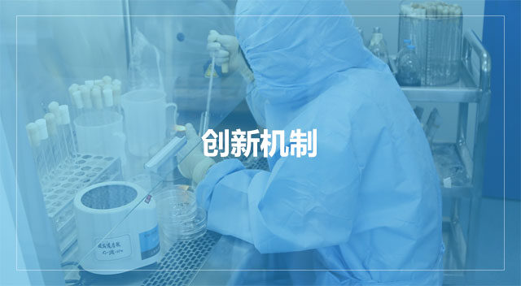

科技研发
研发中心
研发中心
RESEARCH & DEVELOPMENT CENTER
公司的研发资源分布在三联药业工程技术研究中心、三联科技、循道科技。为充分利用公司内部的研发资源，公司成立了三联药物研究院，通过垂直行政管理和横向业务指导相结合的方式，使公司内部的研发资源有机结合，提高了创新效率。 公司的研发工作由三联药物研究院组织、各研发平台分工协作进行。研究院下设项目管理部、药品注册部、信息研究部、院长办公室，对各研发平台的业务实行横向管理。

公司建立了一套较为完善的创新机制，形成了不断创新的企业文化。公司具备较强的创新能力，通过自主创新、合作创新以及引入创新相结合的方式，企业的创新能力不断加强，并形成了多项创新转化成果。目前公司被授予哈尔滨市专利优势示范企业、黑龙江省专利优势示范企业称号、被认定为哈尔滨市企业技术中心、省级企业技术中心、科技成果转化及产业化先进单位以及产学研合作先进集体，被认定为“国家博士后科研工作站”。同时，公司采取多项措施保证创新能力的可持续发展。
为促进企业创新发展，充分利用医药工业资源以及大专院校先进的研发能力，公司与其他医药工业企业以及多所大专院校加强合作和交流，建立了产学研合作的创新体系，形成以学研研发带动医药工业发展，以产业资本促进学研研发的良性循环。